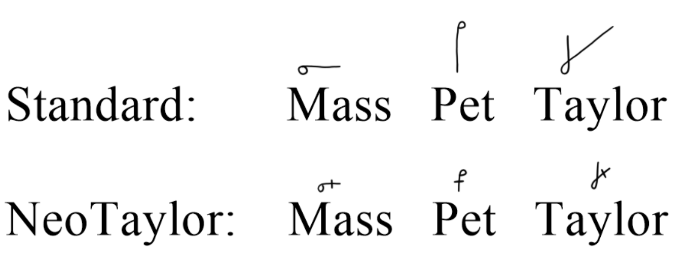

Sometimes in NeoTaylor you will run into a word where two letters join together but look very similar. Where the only difference between the first letter and the letter pair is that the first letter is extended. In standard Taylor all you would do is extend the letter. But in NeoTaylor intersections are used.
If two letters join together such that the only way to represent them is by extending a part of the first letter (like M-S, P-T, etc) then a line is put through the first letter to represent the second one. This also applies if a hookless or loopless letter is pronounced twice (like the -SES suffix)[11].
